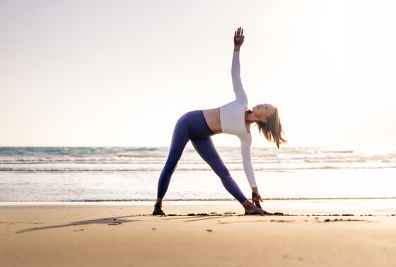

Йога в Ларнаке
Практика у моря для общего оздоровления и укрепления тела.
20 евро за занятие Записаться ↗
Практика у моря для общего оздоровления и укрепления тела.
20 евро за занятие Записаться ↗

Мягкая индивидуальная поддержка здоровья и самочувствия во время беременности.
2500 ₽ за занятие Записаться ↗Онлайн · 10 занятий по 30 минут
Мягкая практика для восстановления тонуса, снятия зажимов и бережного контакта с телом.
Подходит: после родов после 3 месяцев с одобрения врача, при снижении тонуса мышц, недержании или болях внизу живота.
Результат: лёгкость в теле и женское здоровье.
Записаться ↗Онлайн · 12 занятий · 2900 ₽
Практика для снятия напряжения, улучшения осанки и поддержки спины изнутри.
Подходит: при болях в спине и шее, сутулости или зажатом дыхании.
Результат: сильная спина, открытая грудная клетка, лёгкость и уверенность.
Записаться ↗Я помогу выбрать формат и оформить сертификат.
Узнать о сертификате ↗